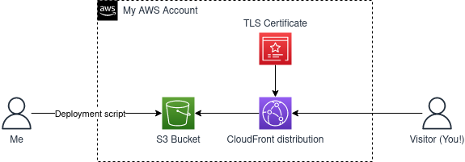

This post is one half documentation for my own purposes, and one half tutorial for someone who wants a similar site. This is a pretty simple project, so it’s likely that what follows is more than what’s necessary, but I’m doing it anyway. I intend to update this document at about the same rate as the system it describes (which I don’t expect to change much).
The main reason I wanted this site was because I had never created and hosted a website end-to-end by myself, so it seemed like a good start. I learned to code in college, and didn’t start doing web development until I had a job at mature companies with their own platforms for managing and hosting sites. In general, my AWS experience is mostly using it “on the job,” so it’s good to see what customers see.
So I started this site with basically one customer in mind: myself.
I wanted a site that:
I had a pretty good idea of what technology I would use to build this, but these requirements rule out a lot of technology. For example, I knew I wouldn’t learn much from using managed services like GitHub Pages. These services would be a good start if I just wanted to post content ASAP, but that isn’t the case.
The site would host static content (until/unless I decide otherwise); would not require authentication or authorization; not support multiple authors; not support internationalization (if you want to read this content in a language other than English, you probably don’t want me to translate it for you); and generally not require much features at all. Simplicity is better than flexibility here, so hosting and running the site on a server would be unnecessary.

This is the architecture for my website. That’s pretty much it.
The only things missing here are things that I consider implementation details to support it, like a CloudFront Function I had to write for accessing folders/relative paths (e.g. /posts/) to work with S3’s ACL configuration.
I landed on using AWS over any other hosting provider mainly because I already knew it pretty well and I wanted to focus on learning how to build and run a static site at all, not how to do it using a particular technology. So to minimize how much I was learning at once, I chose the platform I’m most familiar with.
That choice makes the other ones pretty obvious. I needed a place to store static assets like HTML files and images, for which S3 is the most obvious choice. S3 is capable of hosting a static website on its own, and that covers most of my requirements really.
One thing S3’s hosting doesn’t support is TLS (i.e. hosting via HTTPS rather HTTP). Technically, nothing I have planned for this site really requires TLS, like handling financial transactions. But I plan to send this site to non-technical folks, and I don’t want them to turn away when their browser gives them the scary “This site is not secure” warning. The next logical choice is to introduce CloudFront as a place to attach my custom domain and then certify it. Certification is done via AWS Certificate Manager.
One thing missing here is my domain registrar. I use Porkbun for this. I have nothing against Route53, in fact I think it’s great. I chose not to use Route53 for two reasons: I bought the domain before I had any plan about how to build the site; and if I ever wanted to migrate off of AWS, I would want to do that without messing with domain registration. Being able to do that reduces the likelihood that my site becomes a dead link while I wait to do some work, since I’ll often go weeks without updating this site.
Lastly, I hate managing infrastructure manually, so I did everything using the Cloud Development Kit (CDK).
This site is a Hugo site. The source code is managed privately.
Admittedly this architecture is simple enough that there’s not much difference between its dependencies and their competitors, especially not within AWS.
I didn’t spend much time considering other cloud providers like Google Cloud or Azure. From the perspective of my functional requirements, I’m sure they’re just as viable. The main benefit of using a different cloud provider would be to learn something, but my focus is on learning how to make a website at all.
There’s many ways within AWS to host a website. I could have used EC2 and simply ran the site myself. I could have used Lightsail or Amplify. These services are more complex, but also more flexible, than what I need. If my requirements included anything more than serving text, I would have went with one of them (or really, I would have had to, since S3 can only serve static content). Even if I used a compute service, I would probably rely on S3 and CloudFront for storage and distribution.
An alternative to CDK is to use OpenTofu (or Terraform), but again, I’m avoiding learning too many things at once. An advantage to using OpenTofu is that I’d probably have an easier time switching clouds if I ever wanted to, but I’ll cross that bridge when I get to it.
I thought about using a different static site generator than Hugo, but decided against it because the differences between generators seem mostly negligible, and the cost of switching seems low. Hugo is pretty fast, which is nice, too.
It’s really easy to set up a static website. I think it took me about a weekend at maximum. It would have taken me less time if I had lower standards, like not requiring infrastructure as code, or not requiring TLS, etc. My next static website will probably use a more hands-off approach, because I don’t see much benefit in building one from scratch now that I’ve done it. That said, I have no regrets about building this site this way.
In the process I was exposed to what it’s like to use CDK from the perspective of someone who isn’t working at AWS. The internal experience of using CDK is really nice, because CDK integrates with internal account management tools natively. The external experience of creating an AWS account, setting up roles for access using IAM Identity Center, and then using those roles is not as nice as the internal, but it’s not bad either. My future projects will involve some more sophisticated infrastructure, and I’m glad I learned the “overhead” stuff on a simple project like this one.